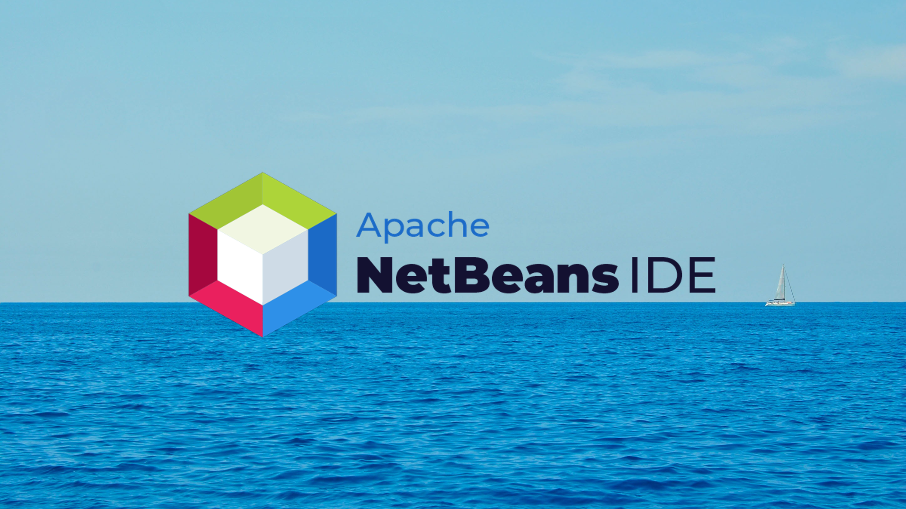

Mi pagina con Bootstrap
Bootstrap es un framework front-end utilizado para desarrollar aplicaciones web y sitios mobile first siendo de esta forma utilizando un layout que se adapta a la pantalla del dispositivo utilizado por el usuario.
| # | Nombre | Paterno | Materno |
|---|---|---|---|
| 1 | Mauricio Hassied | Morales | Hernández |
| 2 | Ismael | Cordova | Barrios |
| 3 | Fabian De Jesus | Gomez | Hernández |
Bootstrap: qué es, por qué y cómo usarlo.

Bootstrap es un framework CSS desarrollado por Twitter en 2010, para estandarizar las herramientas de la compañía. El framework combina CSS y JavaScript para estilizar los elementos de una página HTML. Permite mucho más que, simplemente, cambiar el color de los botones y los enlaces.
Más informaciónNetBeans
Netbeans es un IDE (Integrated Development Environment) o entorno de desarrollo integrado, que es gratuito y de código abierto. Si quieres saber qué es Netbeans, en primera instancia, se debe destacar que sirve para el desarrollo de aplicaciones web, corporativas, de escritorio y móviles que utilizan plataformas como Java y HTML5, entre otras.
Más informaciónProgramación web: ¿en qué consiste?

La programación web sirve para crear páginas y sitios en Internet. Estos lenguajes se fundamentan en la posibilidad de enlazar a través de hipervínculos distintas páginas web, lo que genera la interconexión que conocemos hoy como Internet.
Más información